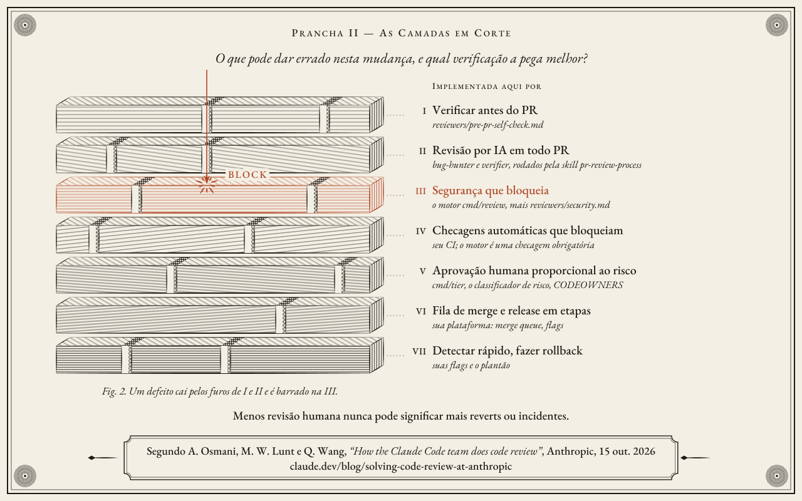
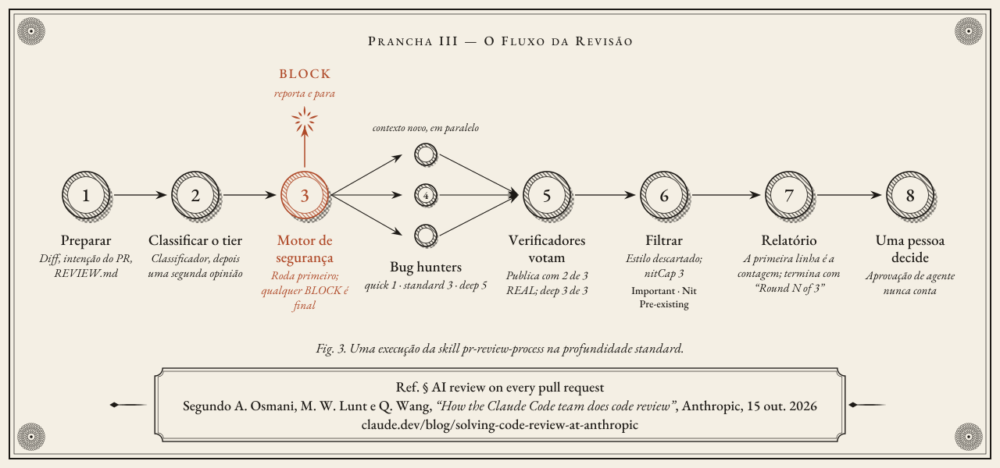
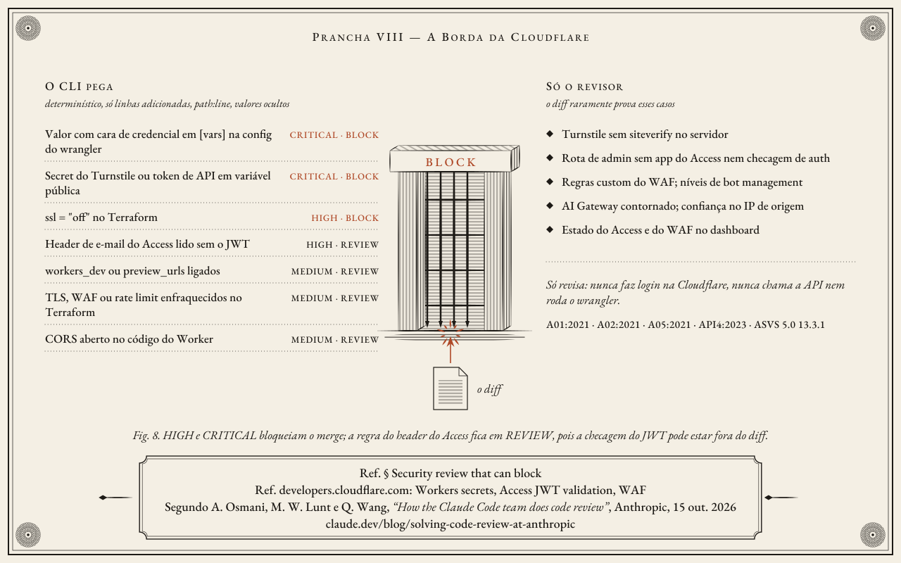
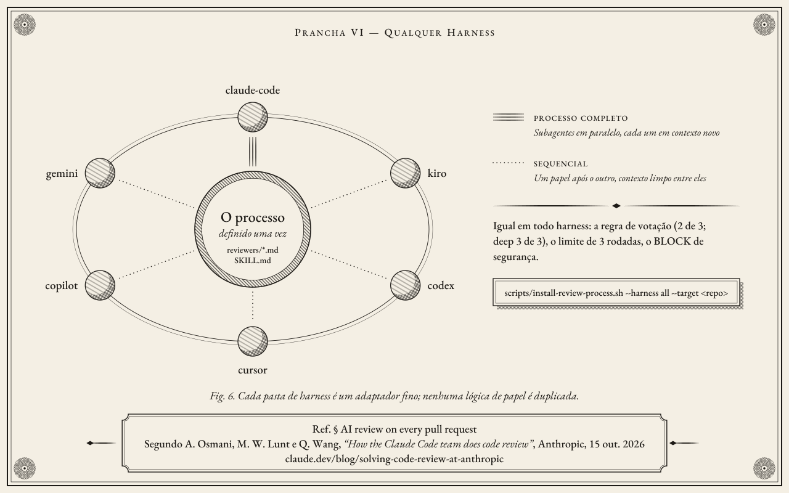

Sete camadas de code review, para qualquer harness de agentes
O AI Code Review transforma o processo que o time do Claude Code na Anthropic descreveu em How the Claude Code team does code review (15 de outubro de 2026) em arquivos que você instala: papéis de revisor, um classificador de nível de risco, workflows do GitHub e adaptadores para seis harnesses de agentes. A camada III é um motor Go determinístico que bloqueia o merge quando encontra um problema de segurança.
Implementação independente · sem vínculo ou endosso da Anthropic.
O processo de revisão
Nenhuma verificação pega tudo. Cada camada tem furos, então o processo empilha sete delas e ajusta a atenção humana ao risco. A pergunta para cada mudança não é quem revisa, mas o que pode dar errado nela e qual verificação pega isso melhor.

| # | Camada | Implementada aqui por |
|---|---|---|
| I | Verificar antes do PR | reviewers/pre-pr-self-check.md: testes e lint com a saída real, depois uma revisão do diff em contexto novo |
| II | Revisão por IA em todo PR | Skill pr-review-process, com os papéis bug-hunter e verifier |
| III | Segurança que bloqueia | O motor determinístico cmd/review e reviewers/security.md |
| IV | Checagens automáticas que bloqueiam | O seu CI; o motor é um dos checks obrigatórios. O template de PR pergunta como foi testado e como desfazer. |
| V | Aprovação humana proporcional ao risco | cmd/tier e reviewers/risk-classifier.md: low 0, medium 1, high 2 aprovações humanas |
| VI | Fila de merge e release em etapas | A sua plataforma: merge queue, flags, rollout em etapas |
| VII | Detectar rápido, fazer rollback | As suas flags e o seu plantão; cada incidente vira um caso em bench/ |
A regra que vale para o processo inteiro: menos revisão humana nunca pode significar mais reverts ou incidentes. O texto completo está em process/00-seven-layers.md.
Camada II: revisão por IA em todo pull request

pr-review-process na profundidade standard.O motor de segurança roda primeiro, e qualquer BLOCK é final. Depois, os bug hunters leem o diff contra o repositório inteiro e a intenção declarada do PR, cada um em contexto novo: um na profundidade quick, três na standard, cinco na deep. Os verificadores votam em cada candidato; um achado é publicado quando dois de três concordam (três de três na deep). Achados só de estilo ou de limpeza são descartados, os nits ficam limitados a três, e todo achado recebe o rótulo Important, Nit ou Pre-existing. Uma pessoa decide; aprovação de agente nunca conta.
A revisão para depois de três rodadas, cada uma revisando só o que mudou, e então pede ao autor que reconsidere a abordagem: convergência.
Camada III: o motor de segurança
Uma CLI determinística em Go lê o diff de um pull request e bloqueia o merge quando encontra um problema de segurança explorável. Ela não usa LLM nem rede, e fica em silêncio se não tiver um path:line como evidência. Achados HIGH e CRITICAL são BLOCK, e o processo sai com código 1.
Num checkout do repositório, go run ./cmd/review security/examples/sample-pr.diff sai com código 1 e imprime:
Decision: DO NOT MERGE
Reason: AuthZ/IDOR at src/api/orders.ts:36 (ASVS-5.0-8.2.2)
Finding: Hardcoded credential in source
Class: Secret in source
Evidence: config/app.ts:14
CWE: CWE-798
OWASP: A02:2021, ASVS-5.0-13.3.1
Severity: CRITICAL
Action: BLOCK
Decision: DO NOT MERGE
Finding: Missing object-level authorization
Class: AuthZ/IDOR
Evidence: src/api/orders.ts:36
CWE: CWE-639
OWASP: A01:2021, API1:2023, ASVS-5.0-8.2.2
Severity: HIGH
Action: BLOCK
Decision: DO NOT MERGE
Finding: Overly permissive CORS origin
Class: CORS misconfiguration
Evidence: src/server.ts:8
CWE: CWE-942
OWASP: A05:2021, ASVS-5.0-3.4.2
Severity: MEDIUM
Action: REVIEWO relatório sai em inglês nas duas versões do site, porque é a saída real da ferramenta.
O que ele pega
| Classe | CWE | IDs OWASP e ASVS | Ação |
|---|---|---|---|
| AuthZ / IDOR | CWE-639 | A01:2021, API1:2023, ASVS-5.0-8.2.2 | BLOCK |
| Segredo hardcoded | CWE-798 | A02:2021, ASVS-5.0-13.3.1 | BLOCK |
| CORS permissivo | CWE-942 | A05:2021, ASVS-5.0-3.4.2 | REVIEW |
| Cross-site scripting | CWE-79 | A03:2021, ASVS-5.0-1.3.1 | BLOCK |
| Server-side request forgery | CWE-918 | A10:2021, ASVS-5.0-1.3.6 | BLOCK / REVIEW |
| Supply chain | CWE-829, CWE-1104 | A08:2021 + ASVS-5.0-15.2.4; A06:2021 + ASVS-5.0-15.1.2 | BLOCK / REVIEW |
| SQL injection | CWE-89 | A03:2021, ASVS-5.0-1.2.4 | BLOCK / REVIEW |
| OS command injection | CWE-78 | A03:2021, ASVS-5.0-1.2.5 | BLOCK / REVIEW |
| Path traversal | CWE-22 | A01:2021, ASVS-5.0-5.3.2 | BLOCK |
| Configuração do Cloudflare | CWE-798, CWE-290, CWE-288, CWE-319, CWE-693, CWE-770, CWE-799 | A05:2021, mais A01:2021, A02:2021 ou API4:2023 conforme a regra; credenciais A02:2021, ASVS-5.0-13.3.1 | BLOCK / REVIEW |
| Prompt injection no diff | CWE-1427 | ASI01:2026, AST05 | BLOCK |
Os detalhes e exemplos de cada regra estão na página de regras. A detecção é por padrões nas linhas alteradas: um smoke test de pull request, não uma auditoria completa.
Revisão da borda da Cloudflare

O motor confere as configurações de Workers e de zona que chegam como código: uma credencial em [vars] na config do wrangler, um secret do Turnstile ou um token de API em variável de ambiente pública, ssl = "off" no Terraform, um header de identidade do Access lido sem o JWT, e TLS, WAF ou rate limit enfraquecidos. A skill cloudflare-config cobre o que o diff raramente prova, como um Turnstile sem siteverify no servidor. Ela só revisa: nunca faz login na Cloudflare, nunca chama a API e nunca roda o wrangler.
Qualquer harness

O processo é definido uma vez, em reviewers/*.md e na skill pr-review-process. O Claude Code roda os hunters como subagentes em paralelo, em contexto novo. Kiro, Codex, Cursor, GitHub Copilot e Gemini CLI rodam os papéis um depois do outro e limpam o contexto entre eles. A regra de votação, o limite de três rodadas e o BLOCK de segurança são os mesmos em todos.
scripts/install-review-process.sh --harness all --target ../your-repo --dry-run
scripts/install-review-process.sh --harness claude-code --target ../your-repoO instalador nunca sobrescreve um arquivo, a menos que você passe --force. No Windows, use scripts/install-review-process.ps1. O que cada harness consegue ou não fazer: harness/README.md.
Perguntas frequentes
Esta é uma ferramenta da Anthropic?
Não. Ela segue o processo que o time do Claude Code na Anthropic descreveu num post público, e é uma implementação independente, sem vínculo ou endosso da Anthropic.
O motor de segurança usa LLM?
Não. É Go determinístico: sem modelo, sem chamada de rede, sem chave de API. O mesmo diff sempre gera os mesmos achados e o mesmo código de saída.
Um comentário no diff consegue convencê-lo a não bloquear?
Não. O diff é tratado como dado não confiável. Um texto com cara de instrução é, ele mesmo, um achado, e não cancela nenhum outro BLOCK.
Dá para rodar no CI?
Sim. A GitHub Action envia o SARIF ao Code Scanning e falha em BLOCK; em qualquer outro CI, rode review --git --from <base> --to HEAD e deixe o código de saída 1 falhar o job.
Fontes e créditos
- Processo de revisão: Addy Osmani, Morgan Westlee Lunt e Qing Wang, How the Claude Code team does code review, Anthropic, 15 de outubro de 2026. Este projeto é uma implementação independente, sem vínculo ou endosso da Anthropic.
- IDs de segurança: OWASP Top 10:2021, OWASP API Security Top 10:2023 e OWASP ASVS 5.0.
- Recursos da Cloudflare que as regras conferem: developers.cloudflare.com, sobre secrets de Workers, validação do JWT do Access e WAF.
- Pranchas: gravadas para este projeto, com textos em EB Garamond (SIL Open Font License 1.1). Fontes e textos alternativos:
docs/art.